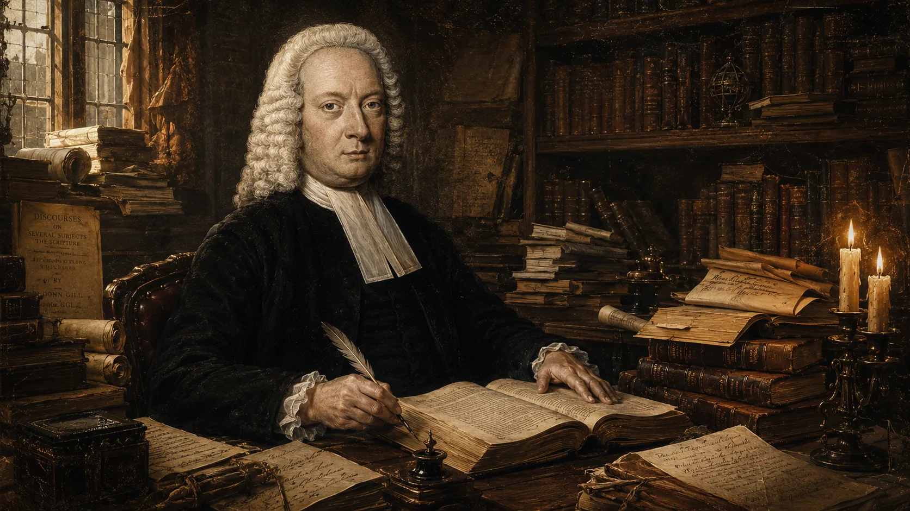
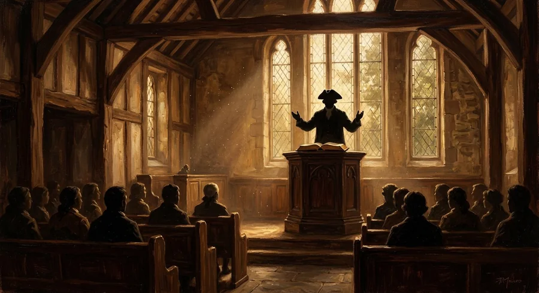
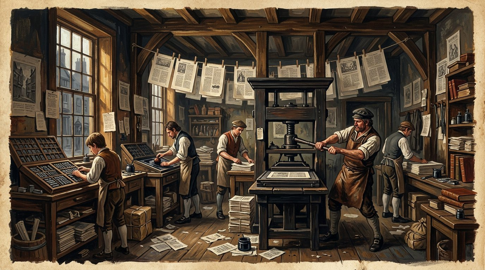

Коротко
- 01
Джон Гилл родился в Кеттеринге (Нортгемптоншир) в простой баптистской семье, получил минимальное школьное образование, но самостоятельно освоил иврит, латынь и греческий.
- 02
В 12 лет услышал проповедь, которая изменила его жизнь; в 18 лет принял крещение и вступил в баптистскую церковь в Кеттеринге.
- 03
В 21 год был призван на пасторское служение в церкви Goat’s Yard в Лондоне, где оставался до конца жизни — более 50 лет.
- 04
В 1729 году опубликовал Декларацию — исповедание веры, ставшее фундаментом его служения: твёрдая позиция по Троице, благодати и богодухновенности Писания.
- 05
Гилл не был академическим теоретиком: его богословие выросло из проповеди, молитвы и заботы о конкретной общине.

I. Ранние годы, обращение и формирование характера
Откуда рождаются гении без университетов
История Джона Гилла производит впечатление не потому, что перед нами очередной романтический сюжет о «самоучке-гении», а потому, что его интеллектуальная дисциплина никогда не была отделена от церковной верности. Лишившись формального образования в одиннадцать лет, он не ушёл в культ собственной исключительности и не сделал из учёности частный проект. Он вырос в одного из крупнейших христианских гебраистов своего века, написал монументальные труды и при этом остался пастором, мужем, отцом и человеком церковной ответственности. Поэтому, прежде чем говорить о позднем полемисте и комментаторе, важно увидеть именно этого Гилла — человека, в котором учёность и благочестие росли вместе.
Утро рождения: три пророчества
Джон Гилл родился 23 ноября 1697 года по старому стилю †Риппон на титульных страницах мемуара указывает: «Nov. 23, o. s. 1697» — old style, юлианский календарь. По новому стилю это 4 декабря 1697. См.: Rippon, «Краткие мемуары» (A Brief Memoir), Лондон, 1838. в Кеттеринге, Нортгемптоншир — небольшом рыночном городке в центре Англии, где господствовал не университетский звон, а тихий, упорный труд диссентерских общин. Его отец, Эдвард Гилл, был торговцем шерстяными изделиями и дьяконом в баптистской церкви Кеттеринга. Эдвард Гилл сначала присоединился к смешанной диссентерской общине, состоявшей из пресвитериан, независимых и баптистов, и за свою кротость был избран там дьяконом. Позднее он вместе с Уильямом Уоллисом возглавил выход баптистов и основал самостоятельную Особую Баптистскую церковь в Кеттеринге. Это был человек скромного, умеренного достатка, которого Риппон описывал поэтическим языком: он был «равно избавлен Богом как от сетей бедности, так и от искушений богатства» — образ, напоминающий классическую формулу пуританского благочестия: «ниже купола дворца, но выше нищей хижины». Мать, Элизабет Уокер, воспитывала детей в духе строгого пуританского кальвинизма, где «избрание» не было абстракцией, а воздухом, которым дышали.
Одно из самых странных и трогательных преданий в истории Гилла связано с самим утром его появления на свет — 23 ноября 1697 года. Риппон, биограф Гилла, записал этот рассказ как сведение, которое «постоянно и уверенно подтверждал» Чеймберс-дровосек «в разные времена, без малейших изменений, даже спустя много лет, когда его специально об этом спрашивали»:
Богословская атмосфера Кеттеринга в конце XVII — начале XVIII века была пропитана идеями Джозефа Хасси (1659–1726) и Ричарда Дэвиса — богословов, которые формулировали доктрины суверенной благодати с особой строгостью, избегая стандартных «предложений благодати» невозрождённым. Гилл защищал Хасси и Тобиаса Криспа в одной фразе: «оба были людьми великого благочестия и учёности». Питер Тун в своей монографии «Возникновение и появление гиперкальвинизма» (The Emergence of Hyper-Calvinism, 1967)1Peter Toon, The Emergence of Hyper-Calvinism in English Nonconformity, 1689–1765. London: The Olive Tree, 1967. Хасси — гл. 3–4; Гилл — гл. 6. Архивная копия: web.archive.org. считал Хасси «главным архитектором гиперкальвинизма» среди нонконформистов, а Гилла — его продолжателем в Лондоне. Это важный контекст: богословие, которое Гилл защищал всю жизнь, он получил не из книг — он вырос в нём.
Книжная лавка вместо грамматической школы
Гилл поступил в Кеттерингскую грамматическую школу и быстро обогнал всех своих сверстников. К одиннадцати годам он уже свободно читал классиков на латыни и греческом языке. Однако в 1708 году директор школы, бывший англиканским священником, ввёл жесткое требование: все ученики, включая детей диссентеров, были обязаны сопровождать его в англиканский храм в будние дни в часы молитв. Эдвард Гилл, как убеждённый диссентер, не мог допустить такого принуждения в вопросах веры и забрал сына из школы. У Гиллов, людей умеренного достатка, не было денег на частное обучение. Так формальное образование Джона Гилла закончилось в одиннадцать лет.
Но то, что для другого мальчика стало бы крушением всех надежд, для Гилла послужило началом сурового и прекрасного пути самообразования. Он остался наедине со своей страстью к познанию. Соседние священники самых разных деноминаций, поражённые его успехами в греческом и латыни, пытались устроить его в одну из лондонских семинарий. Они отправили образцы его латинских сочинений попечителям лондонских фондов, но те ответили сухим отказом, заявив, что мальчик «слишком молод». Оставшись без всякой поддержки, Гилл продолжил заниматься сам. В рыночные дни — единственные, когда открывалась местная книжная лавка — мальчик буквально часами простаивал у прилавка, листая книги разных авторов, которые не мог позволить себе купить. Он делал это столь регулярно и увлечённо, что у жителей Кеттеринга вошла в обиход поговорка: когда хотели подтвердить абсолютную верность и несомненность какого-либо дела, говорили: «это так же верно, как то, что Джон Гилл в книжной лавке». Впоследствии, когда он перебрался в Лондон, эта поговорка трансформировалась среди его знакомых: «так же верно, как то, что доктор Гилл в своём кабинете».
Без наставников, пользуясь лишь подержанными книгами, Гилл выучил иврит самостоятельно. Биограф Риппон зафиксировал это точной латинской пометкой: «Suo Marte»2John Rippon, A Brief Memoir of the Life and Writings of the Late Rev. John Gill, D.D. (London: John Bennett, 1838): "He likewise, Suo Marte, learned the Hebrew language, without any living assistance, by the help of Buxtorf's Grammar and Lexicon." См. оцифровку первого издания: Internet Archive. — то есть собственными силами, преодолевая трудности древнего языка с грамматикой и лексиконом Буксторфа в руках. К девятнадцати годам он овладел еврейским языком настолько совершенно, что читал еврейскую Библию с лёгкостью и глубоким удовольствием.
Спустя полтора века «Баптистская энциклопедия» (1881)3The Baptist Encyclopedia (1881), статья "John Gill": "no man in the eighteenth century was so well acquainted with the writings and customs of the ancient Jews as John Gill." Подробнее: William Cathcart (ed.), The Baptist Encyclopedia, Philadelphia, 1881, vol. 1. сформулирует эту оценку максимально высоко: уже в сравнительно раннем возрасте Гилл начал собирать еврейские труды — два Талмуда, Таргумы и всё, что имело отношение к Ветхому Завету и его эпохе; и, по словам энциклопедии, «ни один человек в XVIII веке не знал литературы и обычаев древних евреев так же хорошо, как Джон Гилл». Это была исключительно высокая оценка баптистского справочника; среди англоязычных баптистских и диссентерских богословов XVIII века Гилл воспринимался как непревзойдённый христианский гебраист.
| Возраст | Достижение | Источник |
|---|---|---|
| 10 лет | Прочитал греческий Новый Завет целиком | Rippon, Memoir |
| 11 лет | Вынужден покинуть грамматическую школу | Церковные записи Кеттеринга |
| ~14 лет | Владеет латынью, греческим, начинает иврит | Автобиографические заметки |
| 19 лет | Читает еврейскую Библию без помощи | Свидетельства учеников |

Бытие 3:9 — вопрос, изменивший жизнь
Около двенадцати лет Гилл услышал проповедь Уильяма Уоллиса на текст: «И призвал Господь Адам и сказал ему: где ты?» (Быт. 3:9). Этот вопрос — Божий зов к падшему человеку — пронзил мальчика. Где я? В каком состоянии нахожусь? Что отвечу Богу, если умру необращённым?
Гилл отличался чрезвычайной осторожностью и глубоким библейским подходом к личному исповеданию. Несмотря на то что духовный переворот в его душе совершился рано, он ждал долгих семь лет, испытывая своё сердце. Лишь 1 ноября 1716 года, за три недели до своего девятнадцатилетия, он публично исповедал веру перед церковью Кеттеринга и принял крещение погружением в местной реке от Томаса Уоллиса.
This ordinance he gave?
And did his sacred body lie
Within the liquid grave?
What rich and what amazing grace!
What love beyond degree!
That we the heavenly road should trace,
And should baptized be.
Через три дня, 4 ноября, он был принят в полное общение церкви и впервые участвовал в Вечере Господней. Тотчас в тот же вечер на молитвенном собрании он начал истолковывать Писание, прочитав и объяснив 53-ю главу пророка Исаии. В следующее воскресенье он произнёс свою первую официальную проповедь на текст из 1 Кор. 2:2 — «Ибо я положил себе не знать между вами ничего, кроме Иисуса Христа, и притом распятого». Этот текст стал девизом всей его жизни.
II. Пасторское служение в Хорслидауне
Хорслидаун: пятьдесят один год на одном месте

Ещё до своей лондонской кафедры Гилл прошёл практику: вскоре после вступления в Кеттерингскую церковь, в 1717–1718 годах, он находился в Хайем-Феррерсе и помогал пастору Джону Дэвису в новой баптистской общине. Это был его первый опыт пастырского служения — пробный год перед настоящим призванием. В Хайем-Феррерсе он познакомился с Элизабет Негус, благочестивой и разумной христианкой, которая стала его верной супругой. Они поженились в 1718 году. О её роли в жизни Гилла биограф Риппон пишет с глубоким уважением: она избавила мужа от всех житейских забот, позволив ему полностью отдавать силы изучению Писания и пастырскому служению. Супруги прожили душа в душу сорок шесть лет, до её кончины в октябре 1764 года.
В 1719 году лондонская баптистская община в Хорслидауне (часовня Козьего Двора — Goat's Yard Chapel, Саутварк) потеряла своего пастора Бенджамина Стинтона. Община обратилась к молодому Гиллу с просьбой проповедовать у них. Его глубокий, библейский стиль сразу пленил паству. 22 марта 1720 года, в возрасте двадцати двух лет, Джон Гилл был официально рукоположён на это служение.
«Как голубь привлекает диких голубей своим кротким общением в голубятню, так и те, кто призван благодатью, будут использовать все надлежащие пути и методы, чтобы привлечь и приобрести других для Христа и для послушания Его путям и установлениям...»
— Джон Гилл, толкование на Песнь Песней 2:14Гилл остался пастором Хорслидауна пятьдесят один год — до самой смерти в 1771 году. При его жизни, 9 октября 1757 года, община, переросшая старое здание, открыла новую просторную часовню на Картер-Лейн, Саутварк — у Тули-стрит (Tooley Street), которую в источниках также связывают со старым названием St. Olave’s Street. Та же церковь впоследствии переезжала на Нью-Парк-Стрит, а затем превратилась в знаменитый Митрополитен-Табернакль (Metropolitan Tabernacle) под руководством Чарльза Сперджена. Влияние Гилла на эту общину было фундаментальным, заложив основу её строгого доктринального богословия на два века вперёд. Сегодня в Митрополитен-Табернакле продолжает служение пастор Питер Мастерс — с 1970 года (по состоянию на 2026 год — 56 лет служения; это второй по длительности пасторат в истории этой церкви после Джона Риппона, служившего 63 года).

Рукоположение 22 марта 1720 года: полный протокол события
В марте 1720 года Гиллу исполнилось двадцать два года. Община, призвавшая его, вела свою историю с 1652/1653 годов — она существовала уже около семидесяти лет. Рукоположение молодого пастора стало событием огромного масштаба. На основании церковных записей и мемуаров Риппона мы можем с точностью восстановить всю последовательность протокола этого памятного дня:
Этот день соединил Гилла с его близким другом и наставником Джоном Скеппом (1675–1721). Именно Скепп, глубокий знаток еврейской литературы, привил Гиллу любовь к раввинистике. Скепп скончался 1 декабря 1721 года — примерно через двадцать месяцев после этого дня. После его смерти Гилл через Фонд партикулярных баптистов получил грант на выкуп большей части его обширной раввинистической библиотеки. Эти книги легли в основу всего его комментаторского труда. В предисловии к переизданию труда Скеппа «Божественная сила» (1751) Гилл тепло назвал его «человеком исключительных талантов, горячим и живым проповедником Евангелия».
Декларация Козьего Двора 1729 года: архитектура исповедания
Придя в Хорслидаун, Гилл обнаружил, что среди диссентерских общин Лондона активно распространяются тринитарные ереси и сомнения в вечном сыновстве Христа. Доктринальный дрейф коснулся и некоторых прихожан Хорслидауна. Гилл увидел в этом угрозу для самого существования церкви. По просьбе членов общины, желавших полной ясности веры, он составил в 1729 году Декларацию веры Козьего Двора (Goat's Yard Declaration) — строгое, евангельское и последовательно тринитарное исповедание. Декларация состояла из двенадцати лаконичных статей, открывавшихся преамбулой в языке завета: «Будучи приведены в состояние благодати к тому, чтобы предать себя Господу и равно друг другу по воле Бога, мы считаем обязанностью сделать объявление нашей веры и практики».
| Статья | Содержание статьи |
|---|---|
| I | Священное Писание — единственное, совершенное и авторитетное правило веры и практики. |
| II | Единый истинный Бог в трёх равных Лицах: «Сын и Святой Дух столь же собственно и истинно Бог, как и Отец». |
| III | Вечное, личное и безусловное избрание определённого числа людей ко спасению в Иисусе Христе. |
| IV | Первородный грех, вменение вины Адама и полное нравственное падение человечества. |
| V | Истинное воплощение Сына Божия, причём Его человеческая душа была создана в Его теле при зачатии, а не предсуществовала вечно. |
| VI | Особое (частное) искупление — Христос пролил Свою кровь исключительно за избранных. |
| VII | Оправдание грешника только по вменённой праведности Христа, принимаемой верой. |
| VIII | Возрождение, обращение и освящение грешника исключительно могущественной и непреодолимой благодатью Святого Духа. |
| IX | Окончательное устояние и вечная стойкость всех избранных во спасении. |
| X | Водное крещение верующих погружением и Вечеря Господня как постоянные установления Христа. |
| XI | Крещение погружением по личной вере как необходимое условие участия в Вечере Господней (строгое закрытое причастие). |
| XII | Пение псалмов, гимнов и духовных песен как евангельское установление с сохранением свободы общины в способе его исполнения. |
Статья V декларации — полемическая, направленная против учения о предсуществовании человеческой души Христа, которое было популярно среди некоторых нонконформистов (включая Исаака Уоттса)7Isaac Watts (1674–1748) — великий гимнограф, автор "O God, Our Help in Ages Past". В вопросе о предсуществовании души Христа Watts придерживался нетрадиционной позиции, которую Гилл отверг в Статье V Декларации 1729 года.. Гилл защищал ортодоксальное воплощение: человеческая природа Христа (тело и душа) не существовала до воплощения, а была сотворена Духом Святым во чреве Марии в момент зачатия. Статья XI закрепила практику закрытого причастия: к Вечере допускались исключительно те, кто принял водное крещение по вере. Статья XII о пении утвердила использование гимнов как Божье повеление, примирив строгих сторонников исключительного псалмопения с общиной. Декларация, написанная рукой Гилла, служила живым пасторским уставом церкви Хорслидауна почти сто лет. Риппон фиксирует, что ещё в 1800 году новые члены принимались в общину только при условии полного согласия с её двенадцатью статьями.

Систематическая евангелизация Саутварка
Существует устойчивое, но несправедливое заблуждение, будто Гилл был лишь кабинетным затворником, запертым среди книг и равнодушным к живым душам. Биограф Джордж Элла (1995)4George M. Ella, John Gill and the Cause of God and Truth. Eggleston: Go-Publications, 1995. Подробная биография с акцентом на Goat Yard и евангелизацию. убедительно доказывает обратное: Хорслидаунская община полюбила Гилла именно за его яркий евангелизационный дар. Возглавив церковь, пастор организовал систематическую евангелизацию всего промышленного района Саутварк. Он разделил район на четыре сектора, назначив по двое зрелых братьев на каждый — для еженедельного посещения домов, духовных бесед и раздачи Писания.
Ещё в 1726 году независимый пастор Маттиас Морис из Роуэла опубликовал памфлет, нападающий на крещение погружением. Кеттерингские баптисты попросили Гилла ответить, и он написал трактат «Древний способ крещения погружением» (The Ancient Mode of Baptizing by Immersion). Спор привлёк такое внимание, что баптисты Новой Англии из Америки обратились к Гиллу с просьбой прислать экземпляры. Баптистский фонд отправил весь оставшийся тираж через океан — именно поэтому данные памфлеты так редки в Англии. По поводу этой полемики молодой пастор получил анонимное письмо из Тилберийского форта в Эссексе, наполненное восхищением. Оно завершалось стихами, вошедшими в баптистскую историю:
и чистым словом обратил её в бегство;
затем могучий Гейл своим порывом
поверг церковного дракона — стену исполина.
Да будет и тебе такая же победа,
и пусть твой грубый спорщик насытится тем,
что Гейл ещё живёт в Гилле.
Английский оригинал
STENNETT at first his furious foe did meet,
Cleanly compell'd him a swift retreat:
Next powerful GALE, by mighty blast made fall
The church's dragon, the gigantic WALL:
May you with like success be victor still,
And give your rude antagonist his fill,
To see that GALE is yet alive in GILL.
Источник: John Rippon, A Brief Memoir of the Life and Writings of the Late Rev. John Gill, D.D. (London, 1838), оцифровка первого издания в Internet Archive. Стих упоминает полемистов Джозефа Стеннетта (1663–1713) и Джона Гейла (1680–1721), чей дух борьбы за истину продолжился в молодом Гилле.
Когда в 1739 году началось Великое Пробуждение и тысячи лондонцев собирались слушать открытые проповеди Джорджа Уайтфилда на Кеннингтон-Коммон, община Гилла горячо поддержала это движение. Сам Уайтфилд, восхищавшийся верностью Гилла реформатскому учению, неоднократно приглашал его делить с ним кафедру. Гилл еженедельно возвещал Евангелие огромной аудитории — в своей церкви, на лекциях в Истчипе и на других кафедрах, обращаясь к более чем тысяче слушателей каждую неделю.
Проповедь отца на похоронах дочери: богословие скорби

Великие скорби ранят глубоко, но они же являют миру подлинное величие христианской души. Смерть двенадцатилетней дочери Элизабет Гилл (родившейся 14 марта 1725 года и ушедшей к Господу 30 мая 1738 года, прожив двенадцать лет, два месяца и шестнадцать дней) стала самой глубокой личной раной в жизни Гилла. Биограф Риппон нежно описывает девочку как «прелестное и желанное дитя по своей наружности, разуму и благодати». Отец нашёл в себе силы произнести погребальную проповедь сам, через пять дней после её смерти. Он поднялся на кафедру Хорслидауна и начал словами, заставившими плакать всё собрание: «Позвольте мне сегодня проповедовать скорее самому себе и своей семье, нежели вам»5Rippon, A Brief Memoir (1838): "Permit me to-day to preach rather to myself and my family, than to you." Проповедь из 1 Фесс. 4:13–14, напечатана с приложением "An Account of some Choice Experiences of Elizabeth Gill" (London, 1738).. Текстом его проповеди стали слова из 1 Фессалоникийцам 4:13–14. Гилл решительно отверг учение о «сне души», утверждая, что душа верующего после смерти мгновенно переходит в сознательное и блаженное общение со Христом. Проповедь была напечатана с трогательным приложением «некоторых избранных переживаний» дочери — свидетельств её глубокой детской веры.
Через двадцать шесть лет, 10 октября 1764 года, Гилла постигло новое горе — скончалась его нежно любимая супруга Елизавета, с которой они прожили сорок шесть лет. Овдовевший пастор нашёл в себе мужество подняться на кафедру 21 октября с текстом из Евр. 11:16. Он намеревался произнести надгробное слово о жизни своей спутницы, но в этот момент слёзы сдавили его горло. Великий богослов замолчал на кафедре и смог лишь произнести: «Но я воздержусь говорить что-либо ещё». Характер своей жены он описал только на бумаге — эта рукопись, озаглавленная «Завет непоколебим»6Рукопись найдена в кабинете Гилла после его смерти. Rippon, A Brief Memoir: "She was continued to him more than forty-six years, and died October 10, 1764, in the sixty-eighth year of her age."., была найдена в его кабинете после кончины. У Гилла был строгий взгляд на вопросы брака, но он также детально исследовал и пастырски регламентировал вопросы развода, допуская его исключительно на основании чётких библейских критериев (Мф. 5:32; 19:9; 1 Кор. 7), защищая права женщин в сложную эпоху правового бесправия.
«Они словно склеены и составляют одно целое... Ева произошла из ребра Адама — не из верхней части, чтобы не казаться стоящей выше него и имеющей власть над ним; не из нижней, как будто ниже него и попираемой; но из его бока, вблизи его сердца — чтобы казаться равной ему, нежно любимой и всегда находящейся под его заботой и защитой.»
— Джон Гилл, комментарий на Еф. 5:31 (это экзегеза, но и портрет того, как он понимал собственный брак)У Гилла и Елизаветы выжили только трое детей: дочь Элизабет, сын Джон, ставший ювелиром в лондонском Сити на Грейсчёрч-стрит, и дочь Мэри, вышедшая замуж за книготорговца Джорджа Кита на той же улице. Джордж Кит стал преданным издателем и распространителем большинства монументальных трудов своего великого тестя.
Три личных высказывания: человек за богословом
Биограф Колтон Строзер бережно сохранил три личных высказывания Гилла, которые обнажают его подлинный духовный характер лучше любых внешних оценок:
Личная духовность: молитва, медитация и домашнее благочестие
Один из устойчивых стереотипов о Гилле — образ холодного систематика, в котором учёность якобы вытеснила благочестие. Но его собственные тексты и позднейшие исследования духовности Гилла показывают иную картину. Для него молитва была не приложением к богословию, а дыханием возрождённой души; изучение Писания — не академическим упражнением, а путём к поклонению; семейная и церковная жизнь — школой ежедневной верности.
В этом смысле смерть дочери Элизабет и позднее смерть жены были для Гилла не просто биографическими трагедиями, а проверкой всей его духовной системы. Он учил о воскресении, о сознательном блаженстве души со Христом и о неизменности завета — и был вынужден проповедовать эти истины самому себе, стоя у гроба самых близких людей.
Исторический контекст: Саутварк, джиновая лихорадка, правовое бесправие
Саутварк (Southwark) в первой половине XVIII века представлял собой закопчённый, шумный промышленный пригород Лондона на южном берегу Темзы. Здесь дымили дубильные мастерские, высились причальные склады, кожевенные производства, а в трущобах царил мрак нищеты. Паства Джона Гилла состояла не из аристократов или академиков, а из простых работяг, кожевников и лодочников. Новые переправы через Темзу — Вестминстерский мост (1750) и мост Блэкфрайарс (1769) — изменили транспортную географию южного берега: район стал теснее связан с лондонским Сити, а движение людей и торговли заметно усилилось. Это не было единственной причиной переезда общины на Картер-Лейн, но помогает понять городской контекст этого решения.
Весь первый период его пастырства пришёлся на пик безумной джиновой лихорадки (Gin Craze), когда дешёвый некачественный джин продавался буквально на каждом углу Саутварка, ведя к повальному пьянству и преступности. Парламент тщетно пытался сдержать кризис законами (Gin Acts) в 1729–1751 годах. Гилл проповедовал Слово Божие не в стерильном кабинете, а посреди этой суровой, задыхающейся от греха и социальных бедствий реальности. Совсем рядом, на Кеннингтон-Коммон, вершились публичные казни, проводились крикетные матчи и бушевали открытые евангелизационные проповеди Уайтфилда.
До конца своих дней Гилл и его община находились в положении юридического поражения в правах. Акт о корпорациях 1661 года и Акты об испытании оставались поражёнными в гражданских правах вплоть до отмены актов в 1828 году. лишали протестантских нонконформистов доступа к государственному служению и закрывали для них двери Оксфорда и Кембриджа. Именно поэтому шотландский Маришальский колледж Абердина стал тем университетом, который смог оценить труды Гилла и присудить ему докторскую степень. И когда Гилл закончил свой земной путь, его похоронили на знаменитом кладбище Банхилл-Филдс (Bunhill Fields) — «пантеоне инакомыслия», где покоились Джон Беньян, Джон Оуэн и Исаак Уоттс, разделившие с ним участь изгнанников государственной церкви.
Источники и литература к Части I
Эта часть опирается прежде всего на близкие к Гиллу свидетельства и архивно-исторические исследования раннего лондонского периода. Популярные пересказы и энциклопедические страницы использовались только как вспомогательная навигация и не принимались в качестве основания без первичного или академического подтверждения.